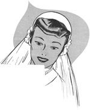
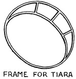

1952—How to Make Hats
by Ruby Carnahan
Wedding Veils
WEDDING VEILS
Bridal Illusion is a filmy net used for wedding veils. A formal wedding veil requires six yards of veiling to make veil. Finished formal wedding veil is about five yards long. An informal wedding veil requires three yards veiling and is usually made fingertip length. Bridal Illusion is 108" wide and requires one width in correct length to make veil.
Edges of veiling do not require a finish, however lace may be used to finish edges if desired. Bridal Illusion is available in white and egg shell.
TIARAS
Many beautiful Tiaras ready made may be purchased in the Millinery Supply Houses, or you can make your own Tiaras.
Purchase a wire Tiara frame and wind the wires of frame with strips of net.
Cut a piece of net double and a few inches wider than frame measures.
Fold net double in length, measure a 1" heading and shirr net.
Pin shirring on brim wire with heading extended around edge of brim, having a piece of the net on both sides of frame.
Make a shirring in net at each wire on frame on both sides, and sew net to frame on these wires.
TO MAKE VEIL
Open veiling to full width. Fold one corner of veiling over one yard and make several rows of shirring on edge of fold. Pin shirred veiling to back of Tiara frame and pull shirring threads to fit frame and tie. Sew veiling through shirring to Tiara on this wire. Trim points on veiling round, at bottom and top of veil.